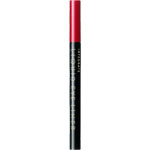
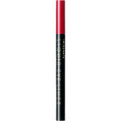

商品の特徴
繊細ラインもくっきりラインも自在に描け、にじみにくいです。
化粧もちの高いリキッドライナー。コシがありながら、しなやかな筆先で思い通りのラインが描けます。
くっきりクリアな美発色を実現します。涙・油分に強いタイプでありながら、通常のクレンジングや洗顔料で落とせます。
※８時間化粧もち持続テスト済み（当社調べ・効果には個人差があります。）
ＢＲ６９０。
- 成分・分量
- 【成分】
水、アクリレーツコポリマー、ＢＧ、エタノール、ポリアスパラギン酸Ｎａ、カミツレ花エキス、セテス－２０、エチルヘキシルグリセリン、水酸化Ａｌ、ＥＤＴＡ－２Ｎａ、クエン酸、トコフェロール、フェノキシエタノール、メチルパラベン、デヒドロ酢酸Ｎａ、エチルパラベン、酸化鉄
- 用法及び用量
- 【ご使用方法】
●キャップをしたまま、必ず軽く２～３回振ってからご使用ください。強く振ったり、落下などの衝撃を与えると液漏れを起こし、キャップ内や衣服を汚すことがありますのでご注意ください。
●アイカラーの前にお使いになることをおすすめします。
●筆先に乳液やアイカラーなどの化粧料が付着し描きにくくなった場合は、ティッシュペーパーなどで筆先を軽く拭き取ってからお使いください。
 
